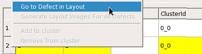
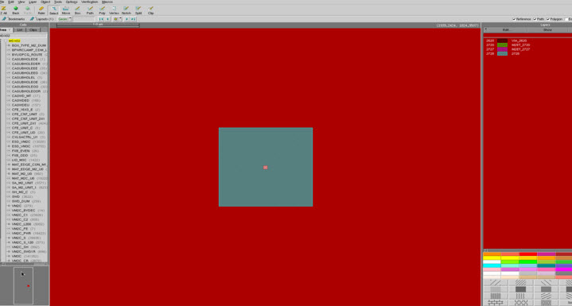

Use the cross probing capabilities of Calibre
DefectReview to check where defects are located on layout patterns.
Procedure
- In Calibre
DefectReview, select Layout > Cross
Probe.
This option launches Calibre® DESIGNrev™ and loads a layout.
Note: All
layout file formats supported by Calibre DESIGNrev can be loaded.
- To cross
probe defects listed in the Defect List to their location in the
layout displayed in Calibre DESIGNrev, select the Go
to Defect in Layout option. As you navigate defects, the
cross probe triggers automatically.
Figure 1. Go
to Defect in Layout
Results
The defect is highlighted in Calibre DESIGNrev
with a center marker and a square with its sides set to the defect
size (displayed as a gray box). An example is shown in the following
figure:
Figure 2. Defect Highlighted in Calibre DESIGNrev